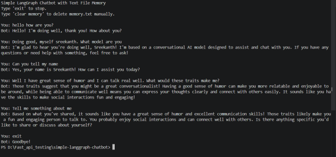

Sreekanth Professional Portfolio
A beginner-friendly AI chatbot prototype built with Python, LangGraph, OpenAI API, and temporary text-file memory.

Chatbot terminal screenshot
I created this chatbot to demonstrate a simple AI/ML application that can have a basic conversation with a user. The goal was to keep the project beginner-friendly while still showing how an AI assistant can be structured.
I planned the chatbot using a simple design thinking approach. I identified the user need: a chatbot that could talk without requiring a complex website or database. Then I built a basic LangGraph flow using one chatbot node. I also added a temporary memory feature using a local text file so the bot could remember recent conversation history and delete it after a set time.
This artifact shows that I can turn an AI concept into a working prototype. It demonstrates basic AI/ML integration, prompt-based interaction, simple memory design, and the ability to explain technical work clearly for an audience.